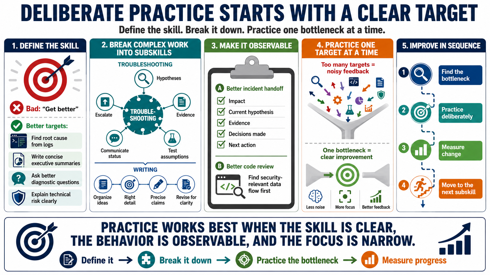

Defining the Skill Clearly
Connecting to LMS... Progress: in progress

Narration
Deliberate practice starts with a clear skill definition. A vague ambition like get better is not enough because it does not say what to practice, how to practice it, or how to know whether progress is happening. A clearer target might be identifying root cause from log evidence, writing concise executive summaries, asking better diagnostic questions, or explaining technical risk to a nontechnical audience.
Complex work usually needs to be broken into subskills. Troubleshooting, for example, may include forming hypotheses, collecting evidence, testing assumptions, communicating status, and deciding when to escalate. Writing may include organizing ideas, choosing the right level of detail, making claims precise, and revising for clarity. Skill decomposition turns a broad capability into smaller parts that can actually be practiced.
Observable behaviors make practice easier to design. If the goal is better incident handoffs, the behavior might be summarizing impact, current hypothesis, evidence gathered, decisions made, and next action. If the goal is better code review, the behavior might be identifying the security-relevant data flow before commenting on style. Good success criteria describe what strong performance looks like.
Choosing one improvement target at a time protects focus. If a learner tries to improve everything at once, feedback becomes noisy and cognitive load rises. Start with the bottleneck that most limits real-world performance. Practice it deliberately, measure the change, then move to the next subskill. This keeps practice connected to capability instead of becoming a collection of disconnected exercises.